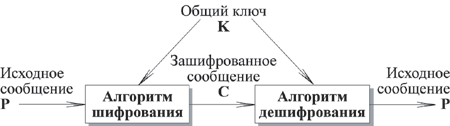
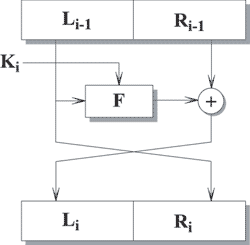
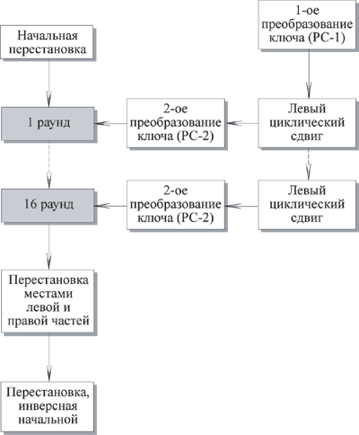
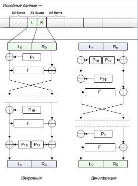

ЛЕКЦИЯ 3ТЕМА 3 - Алгоритмы симметричного шифрования 3.1. Основные понятия и определения Рассмотрим общую схему симметричного шифрования. 
Симметричные алгоритмы можно классифицировать на:
Алгоритмы симметричного шифрования различаются способом, которым обрабатывается исходный текст. Возможно шифрование блоками или шифрование потоком. Все действия, производимые над данными блочным криптоалгоритмом, основаны на том факте, что преобразуемый блок может быть представлен в виде целого неотрицательного числа из диапазона, соответствующего его разрядности. Так, например, 32-битный блок данных можно интерпретировать как число из диапазона 0..4'294'967'295. Кроме того, блок, разрядность которого обычно является "степенью двойки", можно трактовать как несколько независимых неотрицательных чисел из меньшего диапазона (рассмотренный выше 32-битный блок можно также представить в виде 2 независимых чисел из диапазона 0..65535 или в виде 4 независимых чисел из диапазона 0..255). Над этими числами блочным криптоалгоритмом и производятся по определенной схеме следующие действия:
Описанные выше операции циклически повторяются в алгоритме, образуя так называемые раунды. Входом каждого раунда является выход предыдущего раунда и ключ, который получен по определенному алгоритму из ключа шифрования K. Ключ раунда называется подключом. Каждый алгоритм шифрования может быть представлен следующим образом:
Характерным признаком блочных алгоритмов является многократное и косвенное использование материала ключа. Это диктуется в первую очередь требованием невозможности обратного декодирования в отношении ключа при известных исходном и зашифрованном текстах. Для решения этой задачи в приведенных выше преобразованиях чаще всего используется не само значение ключа или его части, а некоторая, иногда необратимая (небиективная) функция от материала ключа. Более того, в подобных преобразованиях один и тот же блок или элемент ключа используется многократно. Это позволяет при выполнении условия обратимости функции относительно величины X сделать функцию необратимой относительно ключа Key. Поскольку операция зашифровки или расшифровки отдельного блока в процессе кодирования пакета информации выполняется многократно (иногда до сотен тысяч раз), а значение ключа и, следовательно, функций Vi(Key) остается неизменным, то иногда становится целесообразно заранее однократно вычислить данные значения и хранить их в оперативной памяти совместно с ключом. Поскольку эти значения зависят только от ключа, то они в криптографии называются материалом ключа. Необходимо отметить, что данная операция никоим образом не изменяет ни длину ключа, ни криптостойкость алгоритма в целом. Здесь происходит лишь оптимизация скорости вычислений путем кеширования (англ. caching) промежуточных результатов. Описанные действия встречаются практически во многих блочных криптоалгоритмах и носят название расширение ключа (англ. key scheduling).
Области применения Стандартный алгоритм шифрования должен быть применим во многих приложениях:
Стандартный алгоритм шифрования должен быть реализован на различных платформах:
Используемые критерии при разработке алгоритмов Считается, что алгоритм симметричного шифрования должен:
3.2. Сеть Фейштеля Блочный алгоритм преобразовывает n-битный блок незашифрованного текста в n-битный блок зашифрованного текста. Число блоков длины n равно 2 n. Для того чтобы преобразование было обратимым, каждый из таких блоков должен преобразовываться в свой уникальный блок зашифрованного текста. При маленькой длине блока такая подстановка плохо скрывает статистические особенности незашифрованного текста. Если блок имеет длину 64 бита, то он уже хорошо скрывает статистические особенности исходного текста. Но в данном случае преобразование текста не может быть произвольным в силу того, что ключом будет являться само преобразование, что исключает эффективную как программную, так и аппаратную реализации. Наиболее широкое распространение получили сети Фейштеля, так как, с одной стороны, они удовлетворяют всем требованиям к алгоритмам симметричного шифрования, а с другой стороны, достаточно просты и компактны. Сеть Фейштеля имеет следующую структуру. Входной блок делится на несколько равной длины подблоков, называемых ветвями. В случае, если блок имеет длину 64 бита, используются две ветви по 32 бита каждая. Каждая ветвь обрабатывается независимо от другой, после чего осуществляется циклический сдвиг всех ветвей влево. Такое преобразование выполняется несколько циклов или раундов. В случае двух ветвей каждый раунд имеет структуру, показанную на рис 3.2.  Рисунок 3.2 –I-ый раунд сети Фейштеля Каждый раунд состоит из вычисления функции F для одной ветви и побитового выполнения операции XOR результата F с другой ветвью. После этого ветви меняются местами. Считается, что оптимальное число раундов – от 8 до 32. Важно то, что увеличение количества раундов значительно увеличивает криптостойкость алгоритма. Возможно, эта особенность и повлияла на столь активное распространение сети Фейштеля, так как для большей криптостойкости достаточно просто увеличить количество раундов, не изменяя сам алгоритм. В последнее время количество раундов не фиксируется, а лишь указываются допустимые пределы. Сеть Фейштеля является обратимой даже в том случае, если функция F не является таковой, так как для расшифрования не требуется вычислять F-1. Для расшифрования используется тот же алгоритм, но на вход подается зашифрованный текст, и ключи используются в обратном порядке. Достоинства сети Фейштеля:
Недостатком является то, что на каждой итерации изменяется только половина блока обрабатываемого текста, что приводит к необходимости увеличивать число итераций для достижения требуемой стойкости. В настоящее время все чаще используются различные разновидности сети Фейштеля для 128-битного блока с четырьмя ветвями. Увеличение количества ветвей, а не размерности каждой ветви связано с тем, что наиболее популярными до сих пор остаются процессоры с 32-разрядными словами, следовательно, оперировать 32-разрядными словами эффективнее, чем с 64-разрядными. Основной характеристикой алгоритма, построенного на основе сети Фейштеля, является функция F. Различные варианты касаются также начального и конечного преобразований. Подобные преобразования, называемые забеливанием (whitening), осуществляются для того, чтобы выполнить начальную рандомизацию входного текста. 3.3. Дифференциальный и линейный криптоанализ Понятие дифференциального криптоанализа было введено Эли Бихамом (Biham) и Ади Шамиром (Shamir) в 1990 году. Конечная задача дифференциального криптоанализа - используя свойства алгоритма, в основном свойства S-box, определитьподключ раунда. Конкретный способ дифференциального криптоанализа зависит от рассматриваемого алгоритма шифрования. Если в основе алгоритма лежит сеть Фейштеля, то можно считать, что блок m состоит из двух половин - m0 и m1. Дифференциальный криптоанализ рассматривает отличия, которые происходят в каждой половине при шифровании. (Для алгоритма DES "отличия" определяются с помощью операции XOR, для других алгоритмов возможен иной способ). Выбирается пара незашифрованных текстов с фиксированным отличием. Затем анализируются отличия, получившиеся после шифрования одним раундом алгоритма, и определяются вероятности различных ключей. Если для многих пар входных значений, имеющих одно и то же отличие Х, при использовании одного и того же подключа одинаковыми (Y) оказываются и отличия соответствующих выходных значений, то можно говорить, что Х влечет Y с определенной вероятностью. Если эта вероятность близка к единице, то можно считать, что подключ раунда найден с данной вероятностью. Так как раунды алгоритма независимы, вероятности определения подключа каждого раунда следует перемножать. Как мы помним, считается, что результат шифрования данной пары известен. Результаты дифференциального криптоанализа используются как при разработке конкретных S-box, так и при определении оптимального числа раундов. Другим способом криптоанализа является линейный криптоанализ, который использует линейные приближения преобразований, выполняемых алгоритмом шифрования. Данный метод позволяет найти ключ, имея достаточно большое число пар (незашифрованный текст, зашифрованный текст). Рассмотрим основные принципы, на которых базируется линейный криптоанализ. Обозначим
Целью линейного криптоанализа является поиск линейного уравнения вида P[α1, α 2, …, α a] ⊕ C[β1, β2, …, βb ] = K[γ1, …, γ c] Выполняющееся с вероятностью р <> 0.5. α i, βi и γi - фиксированные позиции в блоках сообщения и ключе. Чем больше р отклоняется от 0.5, тем более подходящим считается уравнение. Это уравнение означает, что если выполнить операцию XOR над некоторыми битами незашифрованного сообщения и над некоторыми битами зашифрованного сообщения, получится бит, представляющий собой XOR некоторых битов ключа. Это называется линейным приближением, которое может быть верным с вероятностью р. Уравнения составляются следующим образом. Вычисляются значения левой части для большого числа пар соответствующих фрагментов незашифрованного и зашифрованного блоков. Если результат оказывается равен нулю более чем в половине случаев, то полагают, что K[γ1, …, γс] = 0. Если в большинстве случаев получается 1, полагают, что K[γ1, …, γс] = 1. Таким образом получают систему уравнений, решением которой является ключ. 3.4. Алгоритм DES Самым распространенным и наиболее известным алгоритмом симметричного шифрования является DES (Data Encryption Standard). Алгоритм был разработан в 1977 году, в 1980 году был принят NIST (National Institute of Standards and Technology США) в качестве стандарта (FIPS PUB 46). DES является классической сетью Фейстеля с двумя ветвями. Данные шифруются 64-битными блоками, используя 56-битный ключ. Алгоритм преобразует за несколько раундов 64-битный вход в 64-битный выход. Длина ключа равна 56 битам. Процесс шифрования состоит из четырех этапов. На первом из них выполняется начальная перестановка (IP) 64-битного исходного текста (забеливание), во время которой биты переупорядочиваются в соответствии со стандартной таблицей. Следующий этап состоит из 16 раундов одной и той же функции, которая использует операции сдвига и подстановки. На третьем этапе левая и правая половины выхода последней (16-й) итерации меняются местами. Наконец,на четвертом этапе выполняется перестановка IP-1 результата, полученного на третьем этапе. Перестановка IP-1 инверсна начальной перестановке.  Рисунок 3.3 – Общая схема DES Шифрование Начальная перестановка Начальная перестановка и ее инверсия определяются стандартной таблицей. Если М- это произвольные 64 бита, то X = IP (M)-переставленные 64 бита. Если применить обратную функцию перестановки Y = IP-1 (X) = IP -1 (IP(M)), то получится первоначальная последовательность бит. Последовательность преобразований отдельного раунда Теперь рассмотрим последовательность преобразований, используемую в каждом раунде.
64-битный входной блок проходит через 16 раундов, при этом на каждой итерации получается промежуточное 64-битное значение. Левая и правая части каждого промежуточного значения трактуются как отдельные 32-битные значения, обозначенные L и R. Каждую итерацию можно описать следующим образом: Li = Ri-1 Ri = Li-1⊕ F(Ri-1, Ki) Где ⊕ обозначает операцию XOR. Таким образом, выход левой половины Li равен входу правой половины Ri-1. Выход правой половины Ri является результатом применения операции XOR к Li-1 и функции F, зависящей от Ri-1 и Ki. Рассмотрим функцию F более подробно. Ri , которое подается на вход функции F, имеет длину 32 бита. Вначале Ri расширяется до 48 бит, используя таблицу, которая определяет перестановку плюс расширение на 16 бит. Расширение происходит следующим образом. 32 бита разбиваются на группы по 4 бита и затем расширяются до 6 бит, присоединяя крайние биты из двух соседних групп. Например, если часть входного сообщения . . . efgh ijkl mnop . . . то в результате расширения получается сообщение . . . defghi hijklm lmnopq . . . После этого для полученного 48-битного значения выполняется операция XOR с 48-битным подключом Ki. Затем полученное 48-битное значение подается на вход функции подстановки, результатом которой является 32-битное значение. Подстановка состоит из восьми S-boxes,каждый из которых на входе получает 6 бит, а на выходе создает 4 бита. Эти преобразования определяются специальными таблицами. Первый и последний биты входного значения S-box определяют номер строки в таблице, средние 4 бита определяют номер столбца. Пересечение строки и столбца определяет 4-битный выход. Например, если входом является 011011, то номер строки равен 01 (строка 1) и номер столбца равен 1101 (столбец 13). Значение в строке 1 и столбце 13 равно 5, т.е. выходом является 0101. Далее полученное 32-битное значение обрабатывается с помощью перестановки Р, целью которой является максимальное переупорядочивание бит, чтобы в следующем раунде шифрования с большой вероятностью каждый бит обрабатывался другим S-box. Создание подключей Ключ для отдельного раунда Ki состоит из 48 бит. Ключи Ki получаются по следующему алгоритму. Для 56-битного ключа,используемого на входе алгоритма, вначале выполняется перестановка в соответствии с таблицей Permuted Choice 1 (РС-1). Полученный 56-битный ключ разделяется на две 28-битные части, обозначаемые как C0 и D0 соответственно. На каждом раунде Ci и Di независимо циклически сдвигаются влево на 1 или 2 бита, в зависимости от номера раунда. Полученные значения являются входом следующего раунда. Они также представляют собой вход в Permuted Choice 2 (РС-2), который создает 48-битное выходное значение, являющееся входом функции F(Ri-1, Ki). Дешифрование Процесс дешифрования аналогичен процессу шифрования. На входе алгоритма используется зашифрованный текст, но ключи Ki используются в обратной последовательности. K16 используется на первом раунде, K1 используется на последнем раунде. Проблемой DES является малая длина ключа. Также без ответа пока остается вопрос, возможен ли криптоанализ с использованием существующих характеристик алгоритмаDES. Основой алгоритма являются восемь таблиц подстановки, или S-boxes, которые применяются в каждой итерации. Существует опасность, что эти S-boxes конструировались таким образом, что криптоанализ возможен для взломщика, который знает слабые места S-boxes. В течение многих лет обсуждалось как стандартное, так и неожиданное поведение S-boxes, но все-таки никому не удалось обнаружить их фатально слабые места. Двойной DES Простейший способ увеличить длину ключа состоит в повторном применении DES с двумя разными ключами. Используя незашифрованное сообщение P и два ключа K1 и K2, зашифрованное сообщение С можно получить следующим образом: C = Ek2 [Ek1 [P]] При дешифрования два ключа применяются в обратном порядке: P = Dk1 [Dk2 [C]] В этом случае длина ключа равна 56 * 2 = 112 бит. Атака "встреча посередине" Для приведенного выше алгоритма двойного DES существует так называемая атака "встреча посередине". Она основана на следующем свойстве алгоритма. Мы имеем С = Ek2 [Ek1 [P]] Тогда X = Ek1 [P] = Dk2 [C]. Атака состоит в следующем. Требуется, чтобы атакующий знал хотя бы одну пару незашифрованный текст и соответствующий ему зашифрованный текст: (Р, С). В этом случае, во-первых, шифруется Р для всех возможных 256 значений K1. Этот результат запоминается в таблице, и затем таблица упорядочивается по значению Х. Следующий шаг состоит в дешифровании С, с применением всех возможных 256 значений K2. Для каждого выполненного дешифрования ищется равное ему значение в первой таблице. Если соответствующее значение найдено, то считается, что эти ключи могут быть правильными, и они проверяются для следующей известной пары незашифрованный текст, зашифрованный текст. Тройной DES с двумя ключами Очевидное противодействие атаке "встреча посередине" состоит в использовании третьей стадии шифрования с тремя различными ключами. Это поднимает стоимость лобовой атаки до 2168, которая на сегодняшний день считается выше практических возможностей. Но при этом длина ключа равна 56 * 3 = 168 бит, что иногда бывает громоздко. В качестве альтернативы предлагается метод тройного шифрования,использующий только два ключа. В этом случае выполняется последовательность зашифрование-расшифрование-зашифрование (EDE). C = EK1 [DK2 [EK1 [P]]] Рисунок 3.5 – Шифрование тройным DES Рисунок 3.6 – Дешифрование тройным DES
C = EK1 [DK1 [EK1 [P]]] = EK1 [P] Известных криптографических атак на тройной DES не существует. Цена подбора ключа в тройном DES равна 2112. 3.5. Алгоритм Blowfish Blowfish является сетью Фейштеля, у которой количество итераций равно 16. Длина блока равна 64 битам, ключ может иметь любую длину в пределах 448 бит. Хотя перед началом любого шифрования выполняется сложная фаза инициализации, само шифрование данных выполняется достаточно быстро. Алгоритм предназначен в основном для приложений, в которых ключ меняется нечасто, к тому же существует фаза начального рукопожатия, во время которой происходит аутентификация сторон и согласование общих параметров и секретов. Классическим примером подобных приложений является сетевое взаимодействие. При реализации на 32-битных микропроцессорах с большим кэшем данных Blowfish значительно быстрее DES. Алгоритм состоит из двух частей: расширение ключа и шифрование данных. Расширение ключа преобразует ключ длиной, по крайней мере, 448 бит в несколько массивов подключей общей длиной 4168 байт. В основе алгоритма лежит сеть Фейштеля с 16 итерациями. Каждая итерация состоит из перестановки, зависящей от ключа, и подстановки, зависящей от ключа и данных. Операциями являются XOR и сложение 32-битных слов. Blowfish использует большое количество подключей. Эти ключи должны быть вычислены заранее, до начала любого шифрования или дешифрования данных. Элементы алгоритма: 1. Р - массив, состоящий из восемнадцати 32-битных подключей: Р1, Р2, ..., Р18. 2. Четыре 32-битных S-boxes c 256 входами каждый. Первый индекс означает номер S-box, второй индекс - номер входа. S1,0, S1,1, … S1,255; S2,0, S2,1, … S2,255; S3,0, S3,1, … S3,255; S4,0, S4,1, … S4,255; Метод, используемый для вычисления этих подключей, будет описан ниже.
Шифрование Входом является 64-битный элемент данных X, который делится на две 32-битные половины, Xl и Xr.( L и R) (рис. 3.7).  Рисунок 3.7 – Шифрование/дешифрование Blowfish Xl = Xl XOR Pi Xr = F (Xl) XOR Xr Swap Xl and Xr Функция F Разделить Xl на четыре 8-битных элемента A, B, C, D. F (Xl) = ((S1,А + S2,B mod 2 32) XOR S3,C) + S4,D mod 232 Дешифрование отличается от шифрования тем, что Pi используются в обратном порядке. Генерация подключей Подключи вычисляются с использованием самого алгоритма Blowfish.
|
||||||||||